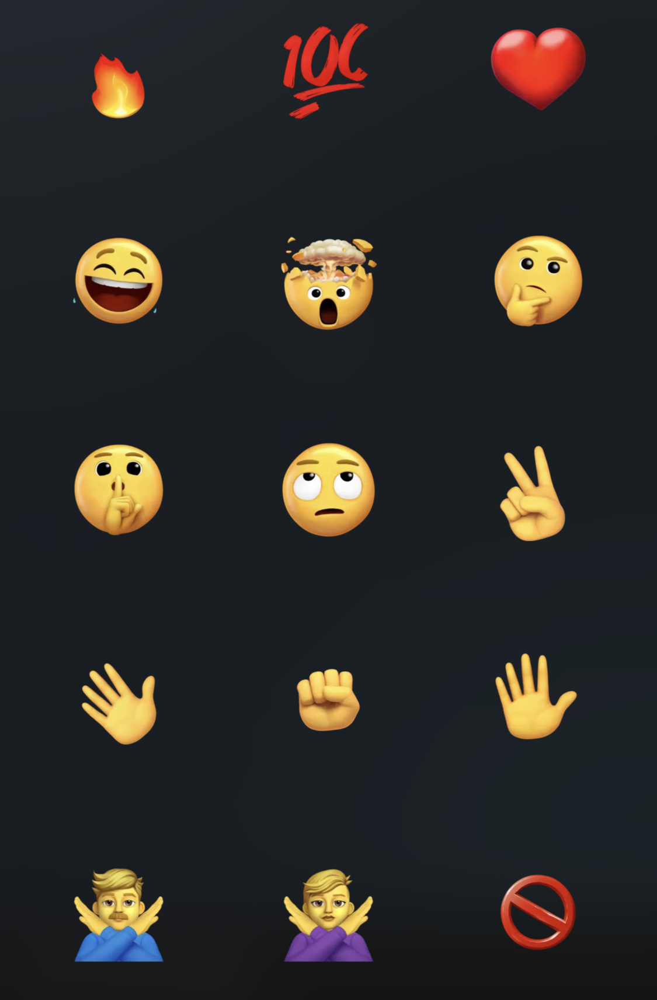

Twitter Portal
All emojis on Twitter use the Twemoji set. Message ReactionsTwitter allows users to add 1 reaction per person to a direct message by double tapping the message and clicking an emoji.
😂 😲 😢 ❤️ 🔥 👍 👎
Twitter also had a face mask 😷 reaction for a short period.
Special Emojis
These emojis are only available on Twitter's Twemoji emoji set:
Shibuya (
⛷🏻 ⛷🏼 ⛷🏽 ⛷🏾 ⛷🏿 🕴️♂️ 🕴🏻♂️ 🕴🏼♂️ 🕴🏽♂️ 🕴🏾♂️ 🕴🏿♂️ 🕴️♀️ 🕴🏻♀️ 🕴🏼♀️ 🕴🏽♀️ 🕴🏾♀️ 🕴🏿♀️ 🤼🏻 🤼🏼 🤼🏽 🤼🏾 🤼🏿 🤼🏻♂️ 🤼🏼♂️ 🤼🏽♂️ 🤼🏾♂️ 🤼🏿♂️ 🤼🏻♀️ 🤼🏼♀️ 🤼🏽♀️ 🤼🏾♀️ 🤼🏿♀️ 🤝🏻 🤝🏼 🤝🏽 🤝🏾 🤝🏿 👪🏻 👪🏼 👪🏽 👪🏾 👪🏿
Twitter Spaces Reactions
Twitter allows users to react with an emoji while in a Twitter Space.
💯 ✊ ✌️ 👋 😂
You can change the skin tone of the fist, peace sign, and waving hand emoji by holding down on them.
✊🏻 ✊🏼 ✊🏽 ✊🏾 ✊🏿 ✌🏻 ✌🏼 ✌🏽 ✌🏾 ✌🏿 👋🏻 👋🏼 👋🏽 👋🏾 👋🏿
Fleet Emojis
Twitter allows users to add emoji stickers to their fleets. They use a different version of Twemoji which are 3D and animated.
🔥💯❤️😂🤯🤔🤫🙄✌️👋✊✋🙅♂️🙅♀️🚫💔😍😢🥺😭😡💛🧡💜💚💙🖤✨👏🙏🙌👨👩🤦♂️🤦♀️💃

Chirp Font [CHIRPBIRDICON]
Cute Aesthetic Twitter Bio Links (And Generator)
Twitter Verified Checkmark Badge Symbols
Invisible Names for Twitter
Invisible Tweets for Twitter
Twemoji
Twitter Fact-Check Banner
Twitter Weird Hashtags
Follow our Twitter!